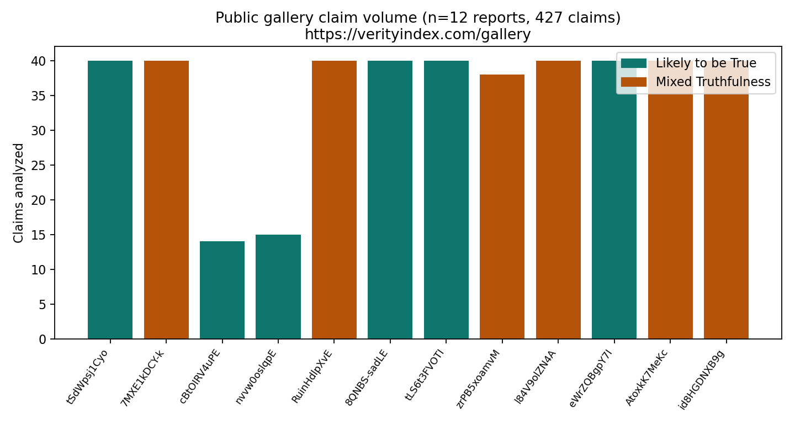
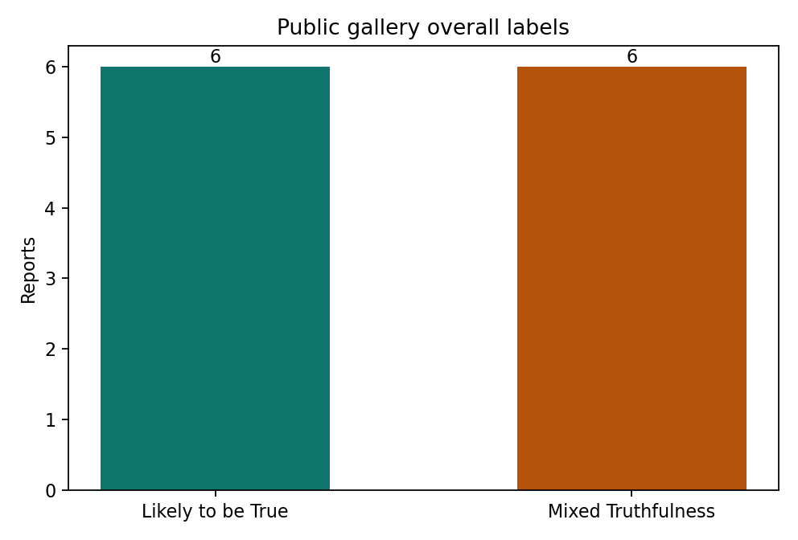
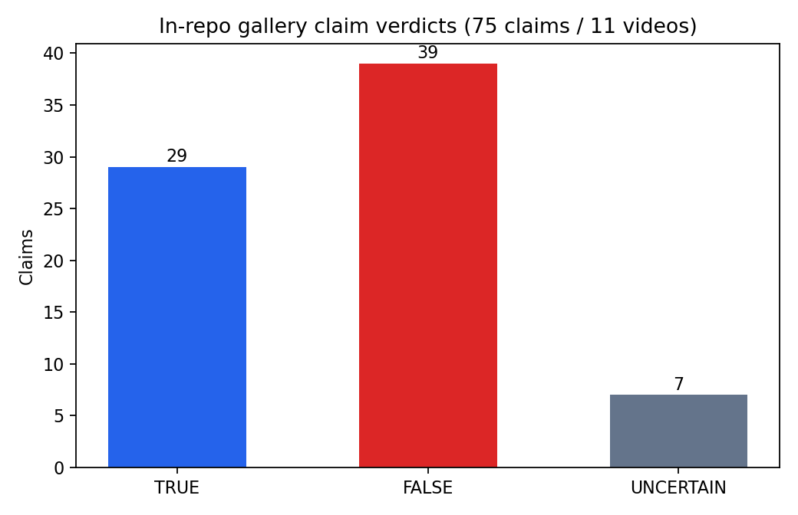
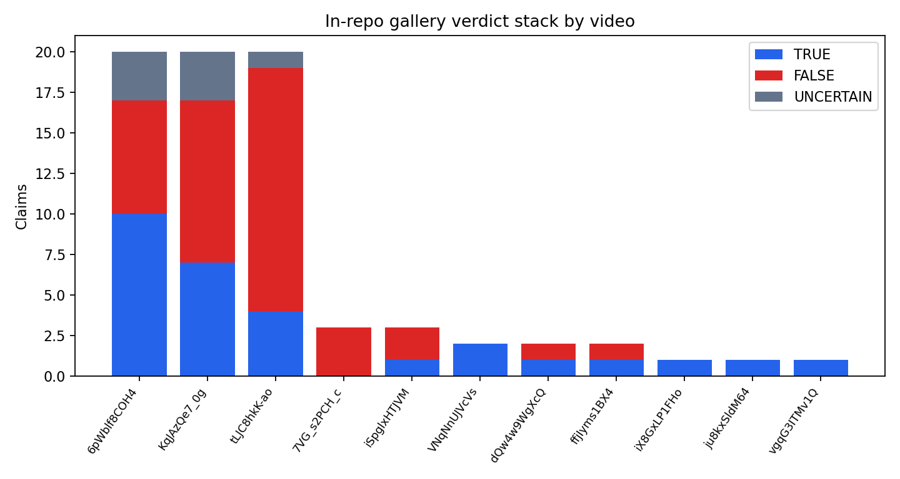

We release VerityNgn OSS 3.0.0, a standalone multimodal engine for claim extraction and verification from video. This release restores Deep Research (grounded forensic summarization) to the public tree, adds optional authenticity and spectral voice cues, and documents the open-core boundary. We do not claim earnings prediction, allocation factors, or lie detection.
Video URL or file → multimodal analysis + claim extraction → counter-intelligence (YouTube / press-release / Sherlock CI) → probabilistic verification (TRUE / FALSE / UNCERTAIN) → standard report (MD / HTML / JSON / PDF) → optional Deep Research (Gemini grounded pass + combined report) → optional authenticity / spectral / Face Landmarker cues
verityngn analyze <url> --deep runs after the standard report JSON exists.
Scraped from the public gallery on 2026-08-29: 12 reports, 427 claims analyzed, labels = {"Likely to be True": 6, "Mixed Truthfulness": 6}.


| Video ID | Claims | Gallery label | Source |
|---|---|---|---|
tSdWpsj1Cyo | 40 | Likely to be True | source |
7MXE1kDCY-k | 40 | Mixed Truthfulness | source |
cBtOIRV4uPE | 14 | Likely to be True | source |
nvvw0oslqpE | 15 | Likely to be True | source |
RuinHdlpXvE | 40 | Mixed Truthfulness | source |
8QNBS-sadLE | 40 | Likely to be True | source |
tLS6t3FVOTI | 40 | Likely to be True | source |
zrPB5xoamvM | 38 | Mixed Truthfulness | source |
l84V9olZN4A | 40 | Mixed Truthfulness | source |
eWrZQBgpY7I | 40 | Likely to be True | source |
AtoxkK7MeKc | 40 | Mixed Truthfulness | source |
id8HGDNXB9g | 40 | Mixed Truthfulness | source |
Claim-level TRUE/FALSE/UNCERTAIN from ui/gallery/approved/
(11 videos, 75 claims with verification results):
{"TRUE": 29, "FALSE": 39, "UNCERTAIN": 7}.



pip install 'verityngn[deep]' verityngn analyze 'https://www.youtube.com/watch?v=VIDEO_ID' verityngn analyze 'https://www.youtube.com/watch?v=VIDEO_ID' --deep verityngn analyze --file deposition.mp4 --title "Matter clip"
Commercial, predictions, and RiskFactor pin OSS ≥3.0.0. Boundary CI fails if
services/predictions or services/quant appear under the public package.
See docs/OPEN_CORE.md.
papers/figures/gallery_live_stats.json